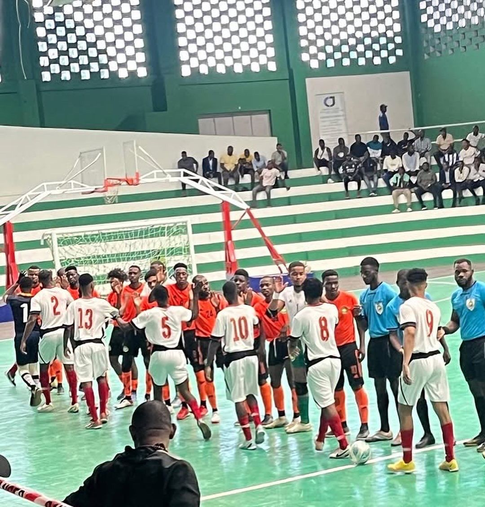
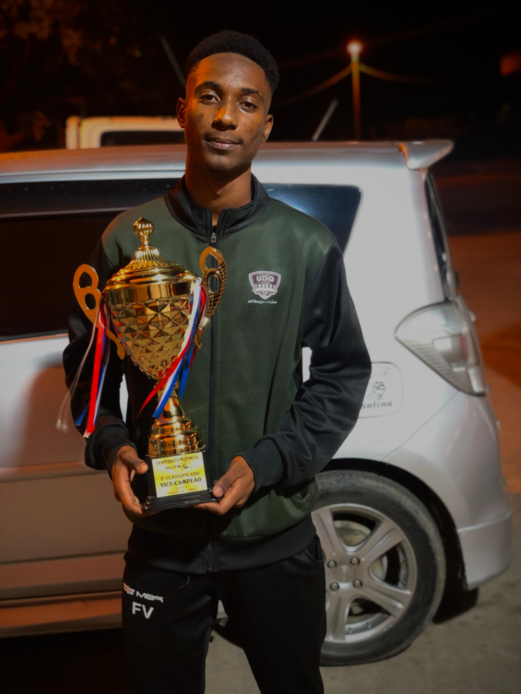
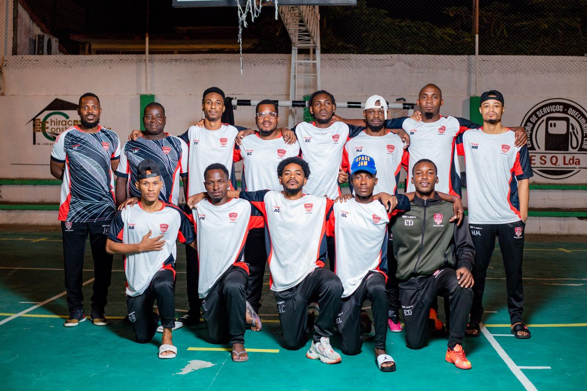
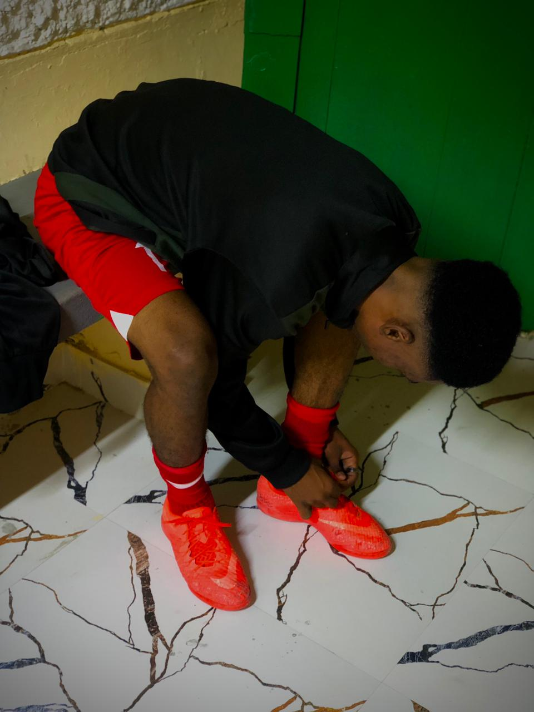

Avançado · Catalão · Quelimane
"A garra não se treina — nasce contigo, afina-se no sacrifício e prova-se no campo quando as luzes se acendem."
Clube Atual
Trajetória
Os primeiros passos no futebol profissional. Farid estreou-se com fome de bola e garra incomum, afirmando-se como uma referência ofensiva desde cedo.
Dois anos de trabalho intenso, evolução tática e uma produção ofensiva impressionante. A consistência tornou-o alvo cobiçado no mercado.
A assinatura que confirmou o talento. Em Quelimane, Farid eleva o seu nível a cada jogo, construindo um legado que vai além dos números.
Farid Chiraz é a prova viva de que o talento sem trabalho é apenas potencial desperdaçado. Desde as primeiras bolas chutadas até ao contrato profissional com a União Desportiva de Quelimane, cada passo foi marcado por dedicação total e uma mentalidade inabalável.
Com uma técnica apurada, visão de jogo excecional e uma capacidade letal de finalização, Farid destacou-se em todos os clubes por onde passou. Mais de 110 golos na carreira não acontecem por acaso — são o resultado de incontáveis horas de treino, análise tática e a recusa em aceitar a mediocridade.
Fora do campo, é um exemplo de disciplina, foco e humildade — qualidades que definem os verdadeiros campeões. O seu percurso é uma inspiração para todos os jovens atletas que sonham com o topo.
Momentos




Conquistas
Números
Além do Campo
O treino de Farid combina preparação física intensa com trabalho tático individualizado. Cada sessão é uma oportunidade de crescer — não apenas fisicamente, mas mentalmente. A rotina diária inclui trabalho de finalização, sprints de alta intensidade, análise de vídeo e meditação focada.
Farid acredita que 80% do sucesso desportivo começa na mente. Inspirado por atletas como Cristiano Ronaldo, cultiva a disciplina do silêncio — treina quando ninguém vê, sacrifica quando é mais difícil, mantém o foco quando a pressão é máxima. A adversidade é o seu combustível.
Comprometido com a comunidade, Farid acredita que o desporto tem o poder de transformar vidas. O seu objetivo vai além dos títulos — é ser uma referência para a próxima geração de atletas moçambicanos, provando que é possível chegar ao topo com trabalho e caráter.
Para além das quatro linhas, Farid Chiraz é um visionário. A FARID LDA representa a sua aposta no futuro — um projeto empresarial que alia a sua marca pessoal ao empreendedorismo.
A visão é clara: construir um legado que perdure além da carreira desportiva, investindo em áreas como formação de jovens atletas, merchandising desportivo, e consultoria para talentos emergentes em Moçambique.
A mesma disciplina e ambição que o tornaram um goleador imparável são agora aplicadas ao mundo dos negócios.